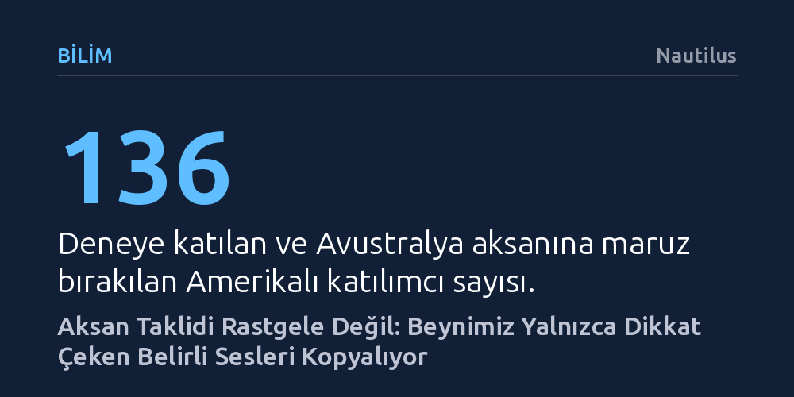

BILIM · Nautilus · 2026-10-27
Ohio State Üniversitesi'nin araştırması, insanların yabancı bir aksanı bütünüyle değil, yalnızca dikkatlerini çeken belirli ses özelliklerini seçerek benimsediğini gösteriyor. Bireyler talimat verildiğinde aksanı başarıyla taklit edebilse de serbest bırakıldıklarında sadece prestijli ve belirgin buldukları ses kalıplarını kopyalıyor.
Aksan kapmanın istemsiz bir refleks olmadığını, beynin dikkat ve toplumsal prestij algısıyla yönettiği seçici bir bilişsel süreç olduğunu gösterir.

Bir bölgeden başka bir bölgeye taşındığımızda ya da tatillerde ailemizi ziyaret ettiğimizde konuşma tarzımızın değiştiğini sıkça fark ederiz. Uzun yıllar önce güney aksanını kaybetmiş biri akrabalarının arasına girdiğinde farkında olmadan eski şivesine dönebilir; benzer şekilde nötr bir aksana sahip biri yerel bir ağzın konuşulduğu bir kente yerleştiğinde o çevrenin tınılarını kapabilir. Ancak bu uyum süreci, çoğu zaman düşünüldüğü gibi etraftaki tüm sesleri sünger gibi emen pasif ve kaçınılmaz bir refleks değildir.
Ohio State Üniversitesi'nden dilbilimcilerin yürüttüğü güncel bir araştırma, beynimizin karşılaştığı aksanları nasıl işlediğine ve hangi ses özelliklerini taklit edeceğine nasıl karar verdiğine ışık tutuyor. Bulgular, konuşma tarzımızı dönüştürürken aslında düşündüğümüzden çok daha yüksek bir kontrole ve seçici bir algı mekanizmasına sahip olduğumuzu gösteriyor.
Araştırmacılar, ana dili İngilizce olan 136 Amerikalı katılımcıyı kapsayan kontrollü bir deney tasarladı. Katılımcılara üniversite mezunu Avustralyalı bir kadının sesinden, farklı ünlü ses değişimlerini barındıran beş sözcük dinletildi: "bath", "trap", "kit", "price" ve "near". Katılımcılar rastgele üç gruba ayrılarak farklı talimatlarla yönlendirildi.
İlk gruptan konuşmacının Avustralya aksanını doğrudan taklit etmesi istendi; ikinci gruba aksanı kesinlikle taklit etmemeleri tembihlendi; üçüncü gruba ise aksandan hiç bahsedilmeden yalnızca duydukları sözcükleri tekrar etmeleri söylendi. Yapılan akustik analizler, katılımcıların verilen talimata bağlı olarak aksanı ustalıkla taklit edebildiğini ya da kendilerini tamamen frenleyebildiğini kanıtladı.
Deneyin en dikkat çekici sonucu, hiçbir özel yönlendirme yapılmayan ve tamamen kendi haline bırakılan üçüncü grupta görüldü. Bu katılımcılar Avustralya aksanını bir bütün olarak kopyalamak yerine, sadece birkaç belirgin özelliği seçerek benimsediler; örneğin "near" sözcüğündeki "r" sesini yutarak kelimeyi "nee-uh" şeklinde telaffuz etmeye yöneldiler.
Deney sonrasında uygulanan anketler, katılımcıların kendi konuşmalarına yansıttıkları özelliklerin doğrudan dikkatlerini çeken unsurlar olduğunu ortaya koydu. İnsanlar yabancı bir aksanı duyduklarında tüm ses dizgesini değil, zihinlerinde en çok öne çıkan ve ayrışan fonetik kırılmaları algılayıp tekrarlama eğilimi gösteriyor.
Bunun yanı sıra araştırmacılar, aksanı taklit etmesi istenen grupta hiçbir çekingenlik veya duraksama gözlemlemedi. Dilbilimcilere göre bu hevesli tavır, Amerikalı katılımcıların Avustralyalılara ve onların aksanına duyduğu kültürel sempati ve saygınlık algısından kaynaklanıyor. Araştırma ekibinden Campbell-Kibler'ın belirttiği gibi, "Damgalanmış bir grupta hissedebileceğiniz gibi, birisiyle dalga geçiyormuş hissine kapılmıyorsunuz." Prestijli görülen şiveler rahatça benimsenirken, toplumsal kabuller beynimizin taklit filtresini doğrudan biçimlendiriyor.